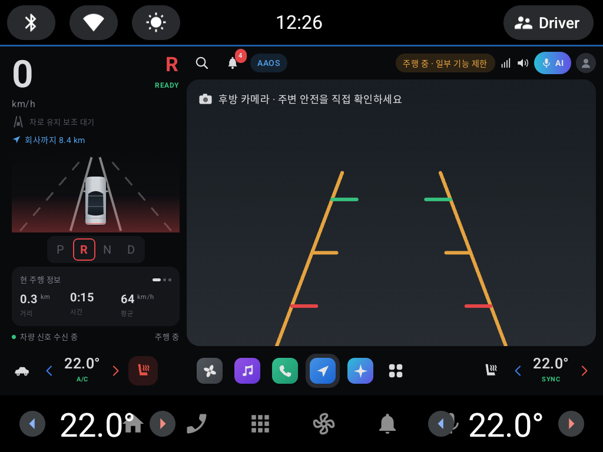
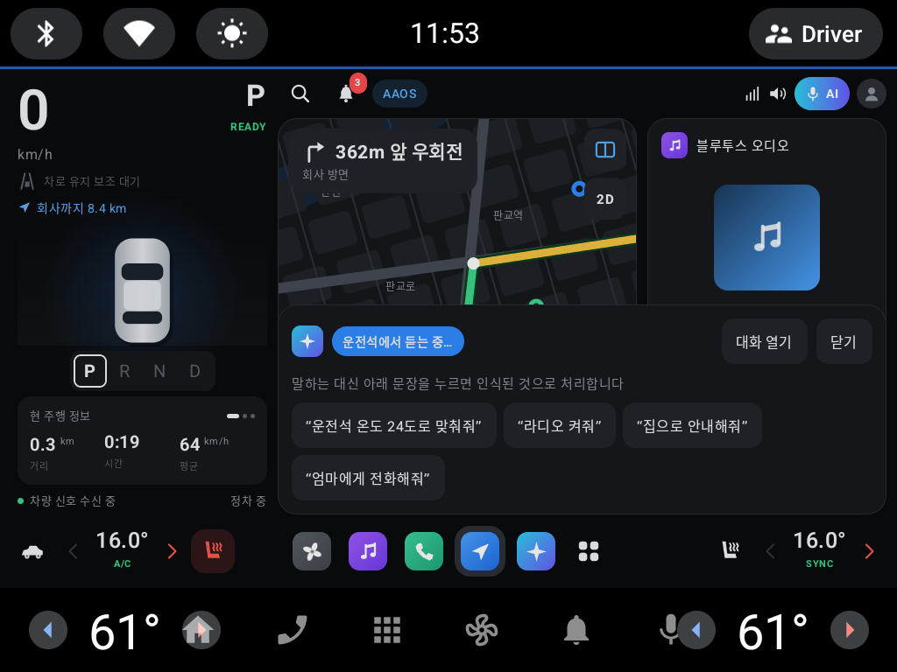

검증 방식
한 번 누르고,
두 곳에서 확인.
화면이 바뀌었는지만 보지 않습니다. 같은 조작이 차량 신호까지 닿았는지 함께 확인합니다.
- 01Appium으로 운전석 온도 ▲를 누릅니다.
- 02HVAC_TEMPERATURE_SET 신호 값을 읽습니다.
- 03반대로 신호를 넣고, 화면 숫자가 따라오는지 봅니다.


108
E2E 테스트
106
AAOS 에뮬레이터 통과
7분 20초
두 기기 병렬 실행
0
불안정한 테스트
화면
차 안에서 쓰는 화면 그대로
AI 어시스턴트
한 문장에 여러 명령을 받고, 말한 좌석을 알아듣습니다. 주행 중에는 할 수 있는 일을 줄입니다.
후방 카메라
기어 신호가 R이 되면 모든 화면 위에 카메라와 주차 가이드 선이 뜹니다.
음성 명령
“운전석 온도 24도”라고 하면 공조 신호가 24.0°C로 바뀌는지까지 봅니다.



기기와 실행
두 기기, 같은 테스트
기기 종류는 자동으로 판별합니다. 차량 서비스가 있으면 VHAL로, 없으면 Mock으로 같은 시나리오를 돌립니다.
| 8단계 확인 | AAOS 에뮬레이터 | Android 태블릿 |
|---|---|---|
| 결과 | 106 passed 1 skipped · 1 xfailed | 102 passed 6 skipped |
| 시간 | 6분 40초 | 7분 6초 |
| 차량 서비스 | CarPropertyManager | Mock |
ivi-tests 폴더에서 실행
# 빌드 게이트 .venv\Scripts\python -m pytest -m smoke # 두 기기 병렬 · 재시도 1회 .venv\Scripts\python tools\run_bench.py ` -m "smoke or sanity" --reruns 1
에뮬레이터와 Appium 준비는 README에 있습니다.
진행 상황
8단계, 테스트 108개
- 0884 → 108
차량 신호 확장
공조와 도어 잠금을 VHAL 신호로 옮기고, 양방향 E2E 24개를 더했습니다.
- 0764 → 84
Pleos Connect 구조
3영역 화면, 분할 화면, 하단 공조 바, AI 어시스턴트.
- 0631 → 64
기능 확장
내비게이션, 라디오, 전화, 설정, 후방 카메라, 음성 명령.
- 04–0531
운영과 재점검
재시도, flaky 통계, 두 기기 병렬, 디자인 개편과 결함 3건 수정.
- 01–030 → 31
기술 검증과 프레임워크
VHAL 값 주입, Compose 앱, 기기 어댑터와 화면 객체.